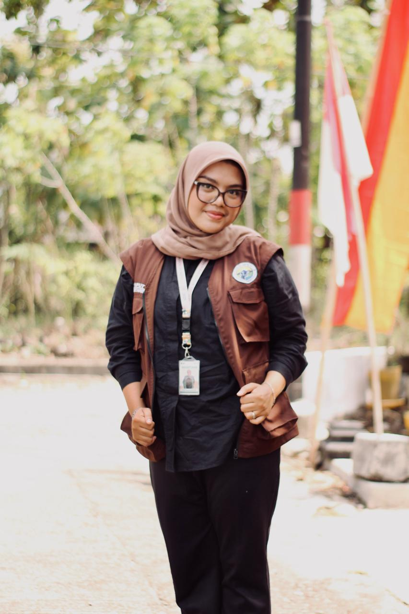

Information Technology Student
"Passionate in Technology, Innovation, and Problem Solving"

Hello! I'm Putri Indah Cahyani, an 8th-semester Information Technology student at Universitas 'Aisyiyah Yogyakarta.
I have a strong interest in web development and technology, with hands-on experience using Laravel, Java, and frontend technologies. I am a disciplined, communicative team player, committed to continuous learning and building meaningful technology-based solutions.
Information Technology – Semester 8
Laravel, Java, Frontend
Senior High School
Completed high school while actively participating in OSIS (Student Council) and PMR (Youth Red Cross), developing leadership and social awareness skills.
B.Sc. Information Technology – Semester 8
Pursuing a degree in Information Technology. Actively involved in HIMA ITECH and various campus committee activities.
Able to work collaboratively and effectively in a team
Experienced in leading teams and organizations
Communicative and able to articulate ideas clearly
Disciplined in managing time and priorities effectively
Creative in finding solutions to complex challenges
Quick to adapt to new environments and situations
A Java-based desktop application designed to help medical staff efficiently track and locate patient data using an optimized search algorithm.
A UI/UX design for a library management system created with Figma, featuring a book catalogue, search, and online borrowing interface.
A web-based medical records information system built with Laravel, covering patient data management, medical history, and comprehensive medical reports.
A digital health navigation platform that helps users find trusted medical information, nearby healthcare facilities, and interactive health guides.
Implementation of a fuzzy logic-based system for intelligent decision-making, applied in data classification and analysis under uncertainty.
A Java-based desktop application with a graphical user interface for managing patient medical records, built using Java Swing/AWT.
A wellness tourism and PKM article exploring Terapi Bunga (Flower Therapy) to promote holistic health services and nature-based eco-tourism.
Sistem Pendukung Keputusan (Decision Support System) for predicting BBCA stock trends using the XGBoost algorithm.
A web-based intelligent system predicting mental health risks using the Random Forest algorithm.
ETL Pipeline Automation: A case study of mental health issues on social media X, analyzing massive data flows with Apache Airflow.
SMA Negeri 1 Bukit Kemuning
Actively participated in the Student Council (OSIS) and Youth Red Cross (PMR), developing leadership, social awareness, and teamwork skills.
Universitas 'Aisyiyah Yogyakarta
Active member of the Information Technology Student Association (HIMA ITECH), participating in academic events, self-development, and campus tech activities.
Universitas 'Aisyiyah Yogyakarta
Actively involved in various campus event committees, from academic programs and tech seminars to student events, strengthening organizational and managerial skills.
Universitas 'Aisyiyah Yogyakarta
Participated in the Student Creativity Program (PKM), developing innovative technology-based projects that deliver real-world solutions for the community.
National Student Exhibition in ICT
Participated as a team member in the competitive programming category, utilizing C++ to solve complex algorithmic challenges.
National Student Exhibition in ICT
Competed as a participant in GEMASTIK 2024 in the competitive programming division.
Software Application Development Category
Awarded the Gold Medal for the project titled "Sistem Informasi Kesehatan Pengembangan Perangkat Lunak Medical Tourism Berbasis Aplikasi Android di Purwokerto".
RS Queen Latifah Yogyakarta
Completed an internship as a Full Stack Developer contributing to IT operations, system development, and digitalization in the healthcare sector.
International Essay Competition
Participated as a contestant in the international-level essay competition, demonstrating critical thinking and global awareness.
Have a question or want to collaborate? Feel free to reach out!